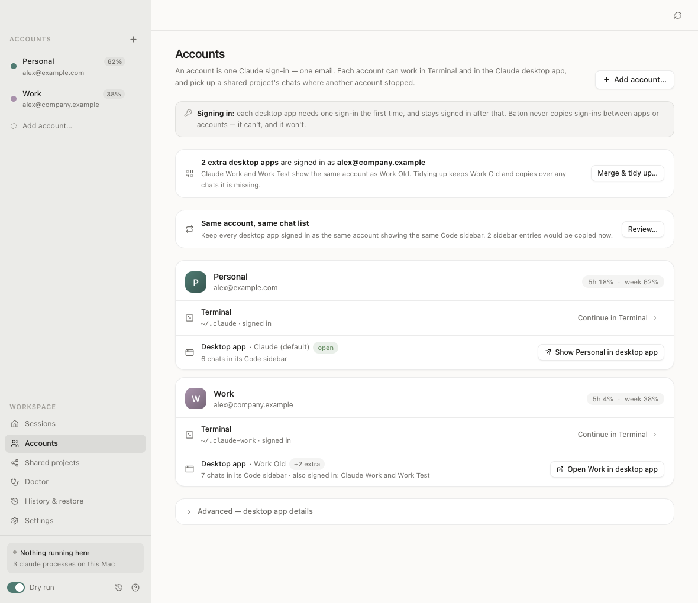
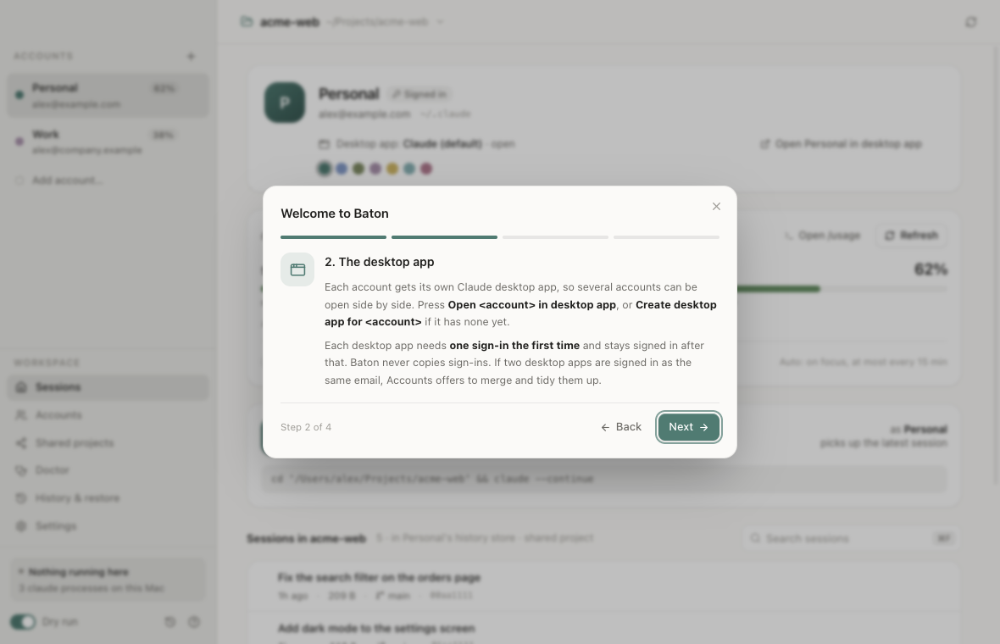
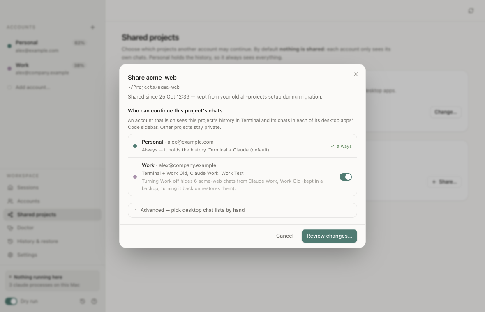
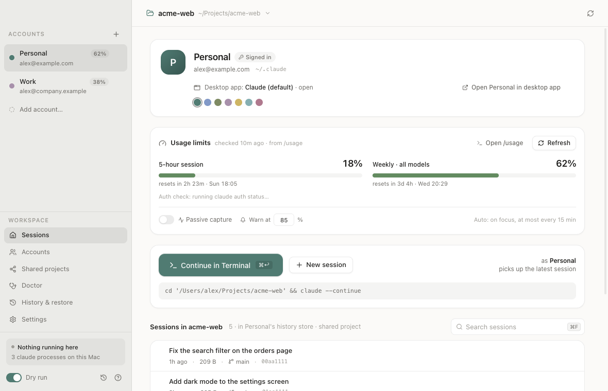
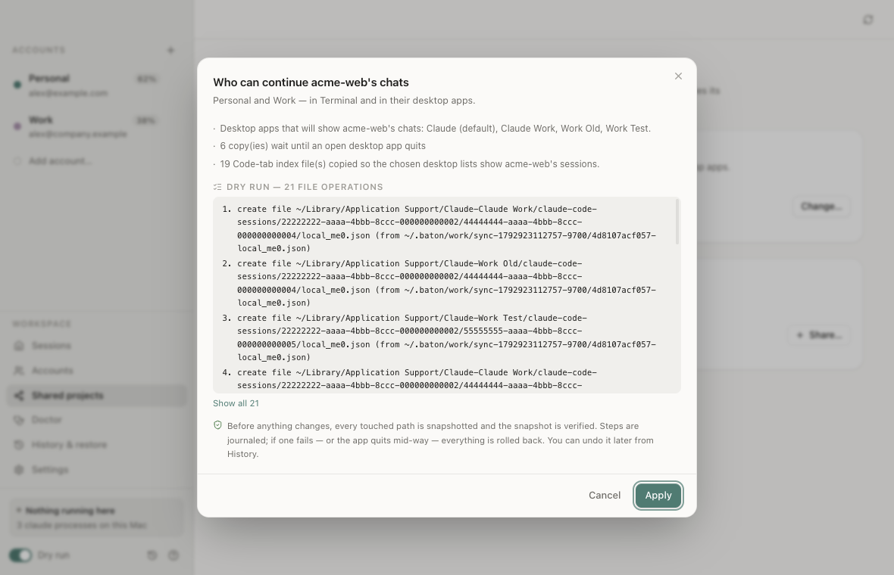

Your Claude accounts. One history.
Baton is a free Mac app for one person with more than one Claude account of their own, say personal and work. Pick up the same project, with the same conversation history, from whichever of your accounts fits the work, in Claude Code in Terminal or in the Claude desktop app.
~/.claudeTerminal + Claude~/.claude-workTerminal + Claude Work
The problem
Two accounts means two separate histories.
Claude Code keeps each account's chats in that account's own folder. Start a project as Personal and, signed in as Work, it isn't there. The desktop app holds one sign-in at a time, so switching means signing out and back in.
Without Baton
Today- The same project, two disconnected histories.
- Continue as the other account and Claude has no context.
- One desktop app, one account at a time.
With Baton
One history- One history per project, continued from either account.
- You choose, per project, which accounts may continue it.
- A desktop app per account, open side by side.
How it works
Three steps, each shown before it happens.
-
Add your accounts and sign in once each.
Your existing
~/.claudebecomes account 1 and is only ever read. Each extra account gets its own folder, like~/.claude-work, and you sign in with Claude Code's ownclaude auth login.- Each extra account also gets its own copy of the Claude desktop app, with a tinted icon, so several accounts can be open side by side.
- Each desktop app needs one sign-in the first time. Baton never copies sign-ins.

-
Choose who can continue each project.
Nothing is shared by default. Open a project, switch on the accounts that may continue it, and review the exact file operations before anything changes.
- Turning an account off hides that project's chats from its desktop apps. They move into a backup, never deleted.
- Turning it back on restores them.
- Sign-ins, settings and prompt history always stay per account.

-
Continue as the account that fits the work.
Pick a project and an account, then press ⌘↩. Baton opens Terminal with
claude --continueas that account, or opens that account's desktop app, with the project's full history.- Browse a project's sessions by title, time, size and git branch, and resume any one.
- If another account is still working in the same project, Baton tells you first.

Usage you can trust
Each account's 5-hour and weekly usage, read from Claude Code's own /usage. No model call, zero tokens. Optional warning at a level you set.
Tidy duplicate apps
Two desktop apps signed in as the same email? Accounts offers to merge them and keeps every chat.
Doctor
Checks links, sync, app copies, disk space, interrupted operations and snapshot integrity.
Keyboard first
⌘↩ continue, ⌘F search, ⌘1…9 account, ⌘P project.
Safety
Every change is previewed, backed up and undoable.
Baton touches the folders where your chats live, so every write goes through one engine, in this order. If any step fails, or your Mac stops halfway, the operation rolls back.
- Plan
- Dry-run preview
- You confirm
- Check running apps
- Snapshot
- Verify snapshot
- Journal
- Apply step by step
- Verify
- Undo any time

-
Nothing is ever deletedRemoved items are unlinked, moved into a verified snapshot or the hidden-chats backup, or moved to the macOS Trash. Transcripts are never overwritten.
-
Never reads your login tokensIt reads only the email and account id from
.claude.json, to label each account. Sign-ins stay in your Keychain. -
Never modifies ClaudeA hard guard refuses any write to
~/.claude, to/Applications/Claude.app, or to an app's data beyond its Code-tab chat list. -
No servers, no telemetryEverything stays on your Mac. Diagnostics exports are redacted: no tokens, no chat content, emails masked.
-
One-click undoEvery operation is in History with an Undo, which is itself previewed and snapshotted. A Dry run switch logs every command and runs none.
Fair use
For one person and their own accounts.
Baton organises your own work across accounts you already have. It doesn't change what any account is entitled to, and it is not a way to get more usage.
Do
- Use it with your own accounts, on your own Mac.
- Use the right account for the right work. Company code on the work account, side projects on your personal one.
- Follow your employer's policy on which accounts and tools you may use for their work.
- Follow the terms of each plan you use.
Don't
- Don't share an account with other people, or use someone else's.
- Don't buy several personal plans to rotate between them past usage limits.
- Don't continue with another account after one has been suspended or banned.
- Don't resell access or run Baton as a service for others.
These terms apply to your accounts whether or not you use Baton. If you are unsure whether your use is allowed, read them, or ask your employer for a work account.
FAQ
Questions people ask first.
Is it allowed?
Baton is for one person using their own accounts on their own Mac, for example keeping personal and work use separate while still continuing your own project's history. It signs in only through Claude Code's and the Claude app's own sign-in flows and never shares or copies sign-ins.
Don't use it to share an account, and follow the terms of the plans you use. See Fair use.
Does it read my tokens?
No. Baton never reads, copies or stores credentials. It reads only the email and account id from an account's .claude.json to show which account is which. At start-up it clears any inherited CLAUDE_* and ANTHROPIC_* variables from its own environment, so each claude it opens uses exactly the account you picked.
Will I lose chats?
No. Transcripts in ~/.claude/projects are never deleted or overwritten, and account 1 always sees everything. Turning an account off for a project moves that project's desktop chat-list entries into a backup; turning it on restores them. Every change has a verified snapshot and an Undo.
One thing to avoid: two accounts writing to the same project at the same time. Baton warns you when another account is still running there.
macOS says it can't open Baton.
Baton is ad-hoc signed but not yet notarized by Apple, so Gatekeeper blocks the first launch. Right-click Baton.app, choose Open, then Open again. On newer macOS versions that don't offer this, try to open it once, then go to System Settings › Privacy & Security and click Open Anyway. You only do this once. Or build it from source.
Does it run on Intel Macs?
The download is an Apple silicon (arm64) build only for now. An Intel build may work from source with electron-builder --mac --x64, but it is untested. Windows and Linux are not supported.
Does it upload anything?
No. Baton has no server and no telemetry. The source is public, so you can check.
Get Baton
Free and open source, under the MIT licence.
Download
For macOS on Apple silicon.
- Download
Baton-1.0.0-arm64.dmgfrom the latest release. - Open it and drag Baton to Applications.
- First launch: right-click Baton, choose Open, then Open.
Opening Terminal for an account the first time asks for permission to control Terminal. That is how Baton opens a window as the account you chose.
Build from source
Needs Apple silicon, Node.js 22 or later, and the Xcode Command Line Tools.
git clone https://github.com/vamsijanaki/baton.git
cd baton
npm ci
npm test # sandboxed, uses a fake HOME
npm run dist # → release/Baton-*-arm64.dmg